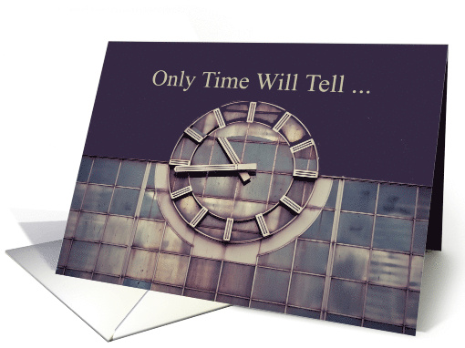

A Day In Lockdown 2020
30th June, 2020
Hello everyone, this is Swetha. I am here penning down my thoughts on 30th June, 2020 in the evening. So, I had heard a lot of people stressing on importance of utilising time so much in the past few days. That’s of course common. All kinds of quotes and beautiful words highlighting the ever-forward-only-moving-nature of time and not to waste it. An equally well represented version was that of a so-called cool gang who told to take a break, watch movies, chill and do whatever you had always wanted to do. I am tired of how people would have all written about Lockdown and Corona and all that. But as always, I was as unsystematic and inconsistent as ever in this lockdown. I used to watch movies altogether, read novels (a series of 7 big books in one week and no books for the next 2 weeks), cook or at least watch recipes of the tastier fast foods made completely at home, or worse still start learning something useful and new. (Of course, I will get very proud and not do anything at all for next few days) There was even a stretch where I practised yoga , but it was less than a week because someone told I had put on weight and I played shuttle continuously for a month when my Dad was also at home (April – May range).
This is where the article is going. Habits. I installed an app to check off whenever I do any of these habits, to get a graphical view of my consistency. Habits list in the app included everything, (stupid things like Wake early, shuttle, read novel, watch movies, cook, online course). I forgot to tell, there was one such stretch where I was doing online courses in Coursera. Around 15 days, then even it got boring.
What I understood was, everything I try, I get crazy about it for few days. After that, I move on like a child with a new toy. I spent more time contemplating and recollecting. I found that not only habits, but also our problems have a huge change with time. Things we thought so complex and unsolvable so silly to us in future. It is just that our circumstances, along with our own mindset and maturity changes. Time changes our perspective and everything along with it.

I was just remembering about school days and how so many things completely childish mattered more for us. Small comparisons among other things, made life so difficult. I was just going down the memory lane, with boards, how people influenced what college we joined, how in vain had I tried so many years for preparing for entrance exams and gave up because of peer pressure in twelfth to fare better at boards, what it felt like before the first days - first day at school ( I don’t remember it!), first board exams, first day in college. When I was trying to remember what exactly were my thoughts those days, I was realising, what time had done to us. We no longer stay that way. We change continuously, showing the world that the changing US is the real US.
Time moves slowly, but passes quickly
Alice Walker
So, anything we feel happy or sad about today is not everlasting. The confusions which break our head may be solved with just TIME and nothing else. Therefore, we don’t need to give a damn about any problem on which we have no control- Only Time Will Tell (by the way I recommend Jeffrey Archer’s Clifton chronicles book titled so) Just, stay true to some principles you have always admired. Don’t change those, or you will cross the narrow red line making you less of yourself, and more of someone else. But otherwise, update yourself and don’t blame yourself for the changing nature of yours, your inconsistent habits and influences that are exerted on you. Perhaps, it is destined that way to make you a better person.